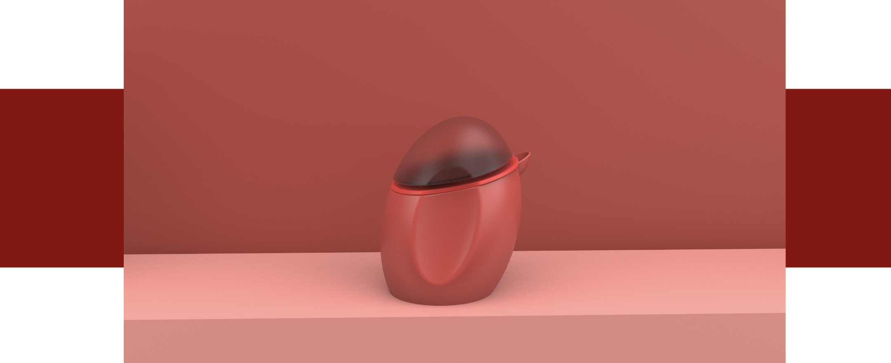

Bienvenido a mi universo de diseño, donde la creatividad florece, la determinación impulsa la innovación y cada proyecto es un testimonio de mi viaje desde Panamá a España hace cuatro años. Como diseñadora profundamente comprometida con mi oficio, te invito a explorar un portafolio impregnado de pasión, propósito y una incansable búsqueda por superar los límites de lo posible.
Impulsada por una curiosidad insaciable y un deseo constante de exploración, afronto cada nuevo desafío con entusiasmo y determinación. Ya sea conceptualizando diseños de productos minimalistas y elegantes, o reimaginando objetos cotidianos desde una nueva perspectiva, prospero ante la oportunidad de innovar y crear soluciones que resuenen profundamente con los usuarios.
El diseño de productos tiene el poder de moldear el mundo que nos rodea, influyendo en cómo vivimos, trabajamos e interactuamos con nuestro entorno. Es una disciplina que conecta la imaginación con la realidad, convirtiendo sueños en manifestaciones tangibles de la creatividad e ingenio humano.
- Bilingual: Español - Inglés
- Creative design
- Social Media Platforms
- Creative Solutions
- Analyze Trends
- Developing presentations
- Technical Drawings
- Materials Science
- Computer Design Programs
- Dibujo técnico y diseño 3D
- Manejo de programas como KeyShot, Rhino, Adobe Suite, entre otros
He trabajado en una amplia variedad de proyectos, desde productos innovadores hasta soluciones de diseño que impactan el mercado. Cada uno de ellos es una pieza única de mi trabajo, impulsado por la pasión por el diseño.
